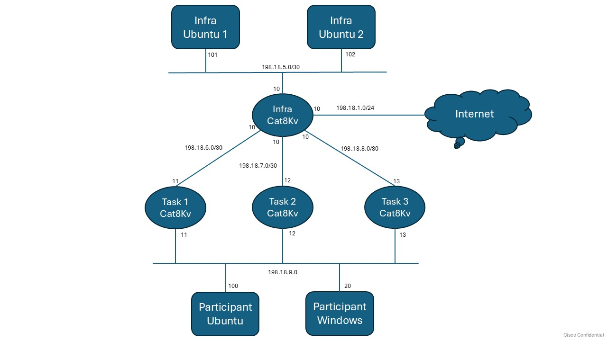

LTRCLD-1199 – Using Containers on Cisco Edge Devices to Turbocharge Troubleshooting¶
Welcome to LTRCLD-1199, a hands-on lab for deploying and operating containerized troubleshooting tools on Cisco IOS-XE (Catalyst 8000v / C8Kv) using:
- Native App-Hosting
- Terraform (Infrastructure as Code)
- Kubernetes (KIND + virtual kubelet)
Index¶
Lab Overview¶
Lab Tasks¶
- Task 1: App-Hosting Deployment on IOS-XE (Manual)
- Task 2: App-Hosting Automation with Terraform
- Task 3: Kubernetes App Hosting using Virtual Kubelet
- Task 4: Basic Network Validation (fping, dig, nmap)
- Task 5: MTR Path Analysis (My Traceroute)
- Task 6: Web Testing & Troubleshooting (curl, wget, httpie)
- Task 7: socat Practical Use Cases
- Task 8: kcat (Kafka CAT) Connectivity & Message Flow
- Task 9: MRTG Interface Monitoring
- Task 10: iPerf3 Network Performance Testing
- Task 11: Wireshark Live Packet Capture (ERSPAN)
- Task 12: Telegraf Monitoring with Prometheus Exporter
Lab Objectives¶
By the end of this lab, you will be able to:
- Deploy a containerized tool on C8Kv using App-Hosting
- Use SCP and MD5 verification to safely transfer images
- Automate app-hosting configuration with Terraform
- Integrate C8Kv into a Kubernetes environment using KIND and virtual kubelet
- Validate that tools are running and accessible for troubleshooting work
Prerequisites¶
To get the most value from this lab, you should be familiar with:
- Basic IOS-XE CLI navigation
- Fundamentals of Docker containers
- Basic understanding of Terraform and/or YAML
- Very basic Kubernetes concepts (Pods, Nodes) — helpful but not required
Lab Topology¶

Device Access Out of Band (SSH + RDP)¶
Use the following information to access the lab devices via OOB
| Name | IP | Username | Password |
|---|---|---|---|
| Ubuntu LAB | 198.18.1.100 | root | C1sco12345 |
| cat8Kv-task-1 | 198.18.1.11 | admin | C1sco12345 |
| cat8Kv-task-2 | 198.18.2.12 | admin | C1sco12345 |
| cat8Kv-task-3 | 198.18.2.13 | admin | C1sco12345 |
| Windows LAB | 198.18.1.20 | administrator | C1sco12345 |
IP Address Details¶
| Name | LAN IP | WAN IP | Container GW |
|---|---|---|---|
| cat8Kv-task-1 | 198.18.9.11 | 198.18.6.11 | 198.18.100.1 |
| cat8Kv-task-2 | 198.18.9.12 | 198.18.7.11 | 198.18.101.1 |
| cat8Kv-task-3 | 198.18.9.13 | 198.18.8.11 | 198.18.102.1 |
- LAN IP is towards LAB Ubuntu
- WAN IP is towards Mgmt Ubuntu, other Cat8Kvs and Internet
- Container GW is the IP of the virtualportgroup interface, which will be default GW for all containers on that router
- Container IPs will be part of respective GW subnet stating from .5